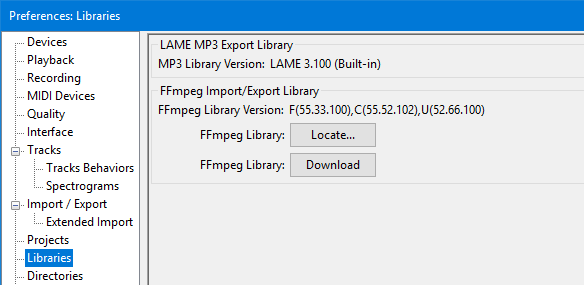
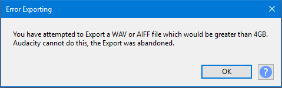

New features in this release
- Details of all the major changes since 2.3.1 can be found in Audacity Release Notes 2.3.2.
Contents
- LAME is now built-in in Audacity for Windows and Mac
- Select button in Track Control Panel
- Nyquist Plug-in Installer
- Macros - "cleaned" folder renamed to "macro-output"
- mod-script-pipe provided with Audacity, on Windows and Mac
- Preference for "Type to create a label"
- Size restrictions on WAV and AIFF exports
- Bug Fixes
LAME is now built-in in Audacity for Windows and Mac
The LAME library, which is needed for exporting MP3 audio files, is now built-in to Audacity on Windows and macOS as a part of the application.
With previous releases it was necessary to download and locate the LAME library as an optional extra.
If you go to Libraries preferences you will see that the option to locate the library is no longer there and the dialog tells you what version of LAME is built-in.
- 
Select button in Track Control Panel
There is now a button in the Track Control Panel.
The whole of an individual track can be selected by clicking this button.
Holding Ctrl (or ⌘ + A on a Mac) and clicking on the button toggles the selectedness of the track.

You can still select a whole track in the previous ways if that is what you are used to:
|
Nyquist Plug-in Installer
The new Nyquist Plug-in Installer is itself a Nyquist plug-in. It simplifies the installation of other Nyquist plug-ins. It is installed by default in Audacity and can be found in the Tools Menu.
This plug-in installer provides a file browser for selecting the plug-in '.NY' file (Nyquist plug-ins are plain text files that have the filename extension '.NY'), and then copies the file to the correct location.
- Accessed by:

Once the plug-in has been installed, in order to use it it must be enabled using the Plug-in Manager.
For details please see this page.
Macros - "cleaned" folder renamed to "macro-output"
The folder that is created by Audacity when running a Macro on files, or when an Export command is used in a Macro that is run on the current project, has been renamed to "macro-output" to give it a more meaningful name.
The created folder used to be called "cleaned" (which was a hangover from functionality that used to be in Audacity, bit was removed many versions ago).
For details please see this page.
mod-script-pipe provided with Audacity on Windows and Mac
The experimental mod-script-pipe is now available with Audacity for Windows and Mac. You need to enable it in Modules Preferences.
Preference for "Type to create a label"
The default setting for the "Type to create a label" in Tracks Behaviors Preferences has been changed from "on" to "off".
When enabled "on", if there is already a label track that has the yellow focus border, you do not need to use "Add Label at Selection" or its Ctrl + B shortcut to create a new label. Just type your required label text to create a new label at the position of the editing cursor or selection region.
The change was made as some users were confused by: a) shortcuts not working when the label track has focus b) labels not being created when the label track did not have focus.
This will not affect any previous setting that you have, or have made, for this Preference unless you chose to have your preferences reset as part of an upgrade installation.
Size restrictions on WAV and AIFF exports
WAV and AIFF audio files are size limited to a maximum of 4 GB. This is a general restriction and not an Audacity restriction.
In earlier versions of Audacity if you exported a WAV or AIFF file that would exceed those limits the file would be corrupted and truncated and this would happen without warning.
For 2.3.2 we have implemented an error trap to catch this and stop it happening. Now when attempting to export an oversized WAV or AIFF file Audacity will not do this and you will get the following error message:
- 
Clicking on the  Help button in the message will show the following table in the Manual
Help button in the message will show the following table in the Manual
Aproximate maximum time durations for WAV and AIFF files
Maximum sizes for files in time duration (hours:minutes) Sample Format Stereo Mono 16-bit (default) 6h:45m 13h:31m 24-bit 4h:30m 9h:01m 32-bit 3h:22m 6h:45m
| These timings are the theoretical maximum times. You would be well-advised to restrict yourself to slightly lower limits to afford some head-room. |
Bug Fixes
- P1 2078 - Append recording into a collapsed track causes a crash
- P2 2068 - Mac: misleading error message when importing M4A without FFmpeg installed
- P2 2082 - Expand function after Append Record to a collapsed track fails
- P2 2086 - Incorrect Mixer Board behaviour
- P2 2096 - High quality stretching in Change Pitch/Tempo causes the Preview to malfunction and remove the selection
- P2 723 - Recording does not stop at end of selection.
- P2 1534 - Linux: Malformed tooltips/"Untitled window" in taskbar when clicking or hovering over toolbar sliders
- P3 1899 - Windows: previously deleted folders are unnecessarily re-created on next Save
- P3 2007 - Windows: Empty folder created on Import if last used import folder does not exist
- P3 1762 - Importing keystrokes can fail to import keystrokes that are not in standard set
- P4 2080 - Windows: Using WASAPI, after recording, playback can fail with "opening sound device error"
- P5 2050 - Misleading LAME version error message
- P4 2084 - Enh: Auto-select behaviour changed from previous version and not documented.
- P4 1248 - Windows: TAB does not navigate out of mouse-created focus in sliders.
- P4 2087 - Mixer Board gain control dialog is ridiculously over-long vertically
- P4 2064 - Linux: ESC key does not work to abort drags in the Timeline Ruler
- P4 1965 - Enh: Track name overlay display for all track types
- P4 2051 - Shortcut for Edit>Clip>Boundaries>Split (Ctrl+i) should be in the Standard shortcut set
- P5 2053 - Splitting or joining collapsed stereo tracks causes broken scroll bar behavior
Note Track bugs fixed
- P3 1815 - NoteTrack: Hidden notes on importing MIDI
- P4 2093 - Note Track: Vertical Zoom Reset produces max. zoom out and not a reset
- P4 1820 - Note tracks don't save the pitch height, which may lead to hidden notes
Links
> Audacity Release Notes 2.3.2 - detailed release notes for this release of Audacity